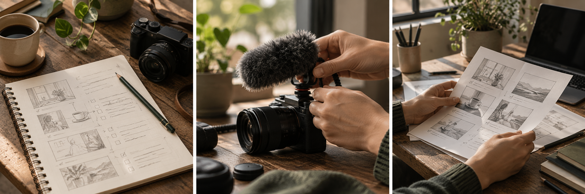

01 / 热点获取与分析
从多源热点里，看到内容机会。
当前样本归一化为 34 条候选；部分来源未成功，候选还需要判断与筛选。
把短视频创作，收进自己的 Obsidian 工作台。
让每一次选题、创作与复盘，都有迹可循。
一年答疑教学内容，让你拥有制作同款智能体的能力。
现价 · 原价 ¥699
带着自己的创作问题，开始动手实践
了解加入方式今天要做什么，下一步到哪里，一眼看清。

点选一个步骤，看热点、对标、痛点与个人知识如何进入选题和脚本。
当前样本归一化为 34 条候选；部分来源未成功，候选还需要判断与筛选。
逐字稿、结构化笔记、分析报告与评论分析，保留在自己的知识库里。
11 月 3 日日报记录观察；选中的既有正式痛点来自 10 月 26 日，来源和状态可回看。
真实概念与个人笔记可整理为知识卡；示例知识卡仍是草稿，来源会保留。
这是一条独立的真实记录：策略 v1、正式 Pain 与 4 条知识引用已绑定。
示例由人工编辑并冻结为 v3，随后进入七维盲评；当前仍待发布，发布由创作者决定。
汇总当前创作状态、阻塞与待处理任务，把注意力放回今天最该推进的一件事。
从现状出发，找到下一步。
创作记录在自己的 Vault 里持续生长。
插件运行在 Obsidian 中；普通内容保存在可读、可编辑的 Markdown 里。
每一段工作都留下依据，发布后的结果继续帮助下一条内容。
梳理账号定位、受众痛点、已有知识与外部参考，让选题有来源。
在单视频工作台中管理脚本、拍摄准备与发布信息。
发布后由你主动采集数据，比较原先判断与真实表现。
把复盘变成受众观察、稳定写法和长期可用的知识资产。
付费用户永久体验 Short Video Ops 最新版；基础版更新晚两个月。
围绕实际制作过程答疑，覆盖编程、AI、GitHub 与 AI 工具基础。
沿着插件的实际工作流，从基础到动手实践，逐步掌握制作方法。
教学与答疑的具体安排请添加微信了解。
可以。学习内容从编程、AI 与 GitHub 基础开始，再结合 AI 工具练习，逐步推进自己的 Vibe Coding 作品。
插件运行在 Obsidian 中。涉及本地 CLI、Python 或平台采集的功能需要桌面端及相应环境；移动端主要用于只读查看。
付费用户永久体验插件最新版；基础版比付费版晚两个月更新。
不会。发布信息由你登记；平台登录、读取作品与数据采集也由你主动发起。
包含一年答疑教学内容，帮助你学习制作同款智能体。具体安排请添加微信咨询。
扫描二维码添加微信，了解一年答疑教学内容与加入方式。
添加后，请发送 “智能体”